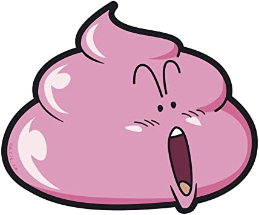

Ejercicio 4: Crearemos un elemento de tipo card con Grid CSS.

Poop
Poop (船尾) is the waste most living creatures leave behind from digesting their food. In real life, it is brown, but in Dr. Slump, it comes in several different colors and are sometimes living entities.